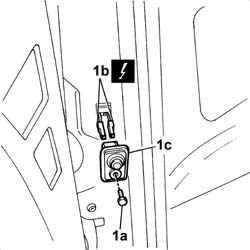

7005N19 front side door indicator switch r r
- Path
- Procedures > 70 FITTINGS > 7005 PASSENGER COMPARTMENT FRONT SIDE DOORS > 7005N front door central locking system > 7005N19 front side door indicator switch r r
- Kind
- repair procedure (removal / refitting; the operation number is the code)
- Applies to
- all engines; all production periods
- Interactive page
- https://sloeber94.github.io/elrnDB-fDbl/en/#/2585018
Applies to: all engines; all production periods
 Removing
Removing
 Refitting
RefittingDisconnect the battery negative terminal.
1. Undo the bolt (1a), disconnect the electrical connectors (1b) and remove the switch (1c).
 | Name | Connector |
|---|---|---|
1b | Switch on left front door |
| Name | Connector |
|---|---|---|
1b | Switch on right front door |

Applies to: all engines; all production periods
Refitting
RemovingConnect the electrical connectors for the switch.
| Name | Connector |
|---|---|---|
- | Switch on left front door |
| Name | Connector |
|---|---|---|
- | Switch on right front door |
Fit the switch and fix it with the bolt.
Connect the battery negative terminal.
Check that the switch is working properly by opening the door and checking that the front courtesy light comes on.